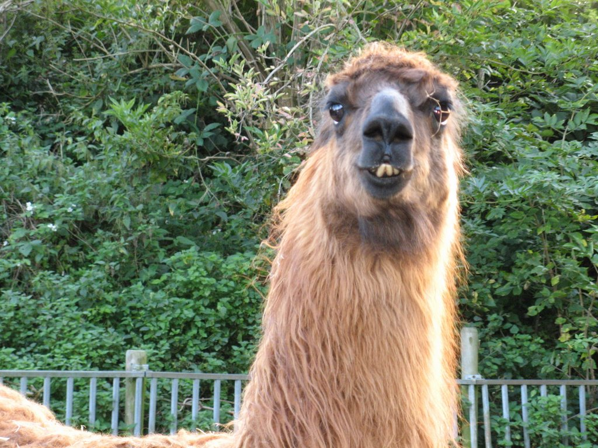
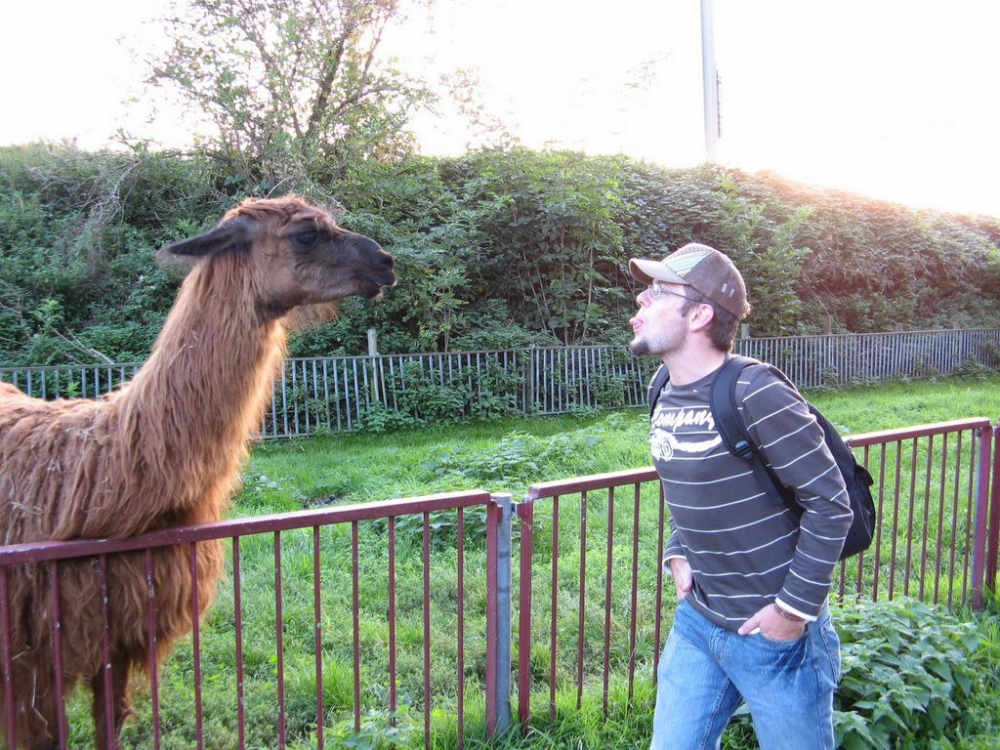
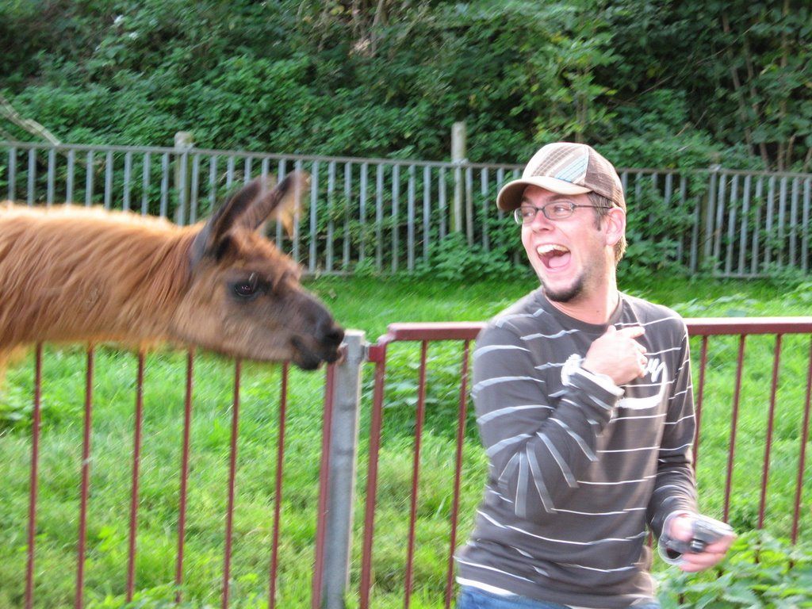

FREITAG, 21. SEPTEMBER 2007
Über eine spezielle Begegnung mit der heimischen Fauna am Ende des 1. Fizen-Ride der Dudes muss hier noch berichtet
werden. Obwohl die Dudes bisher geglaubt haben, dass Lamas aus einem anderen Teil der Welt stammen – scheinen sie auch
hier heimisch zu sein. Unsere spezielle Version schien auch bereits einige landestypische Spezialitäten konsumiert zu
haben.

Und da wir die sehr relaxte und offene Art der Holländer ja bereits kennen, schien eine Kontaktaufnahme auch kein
Problem. Ein Dude ging dies wohl doch etwas zu forsch an


Der Rest dann mit etwas mehr Respekt.
BackHomeNext